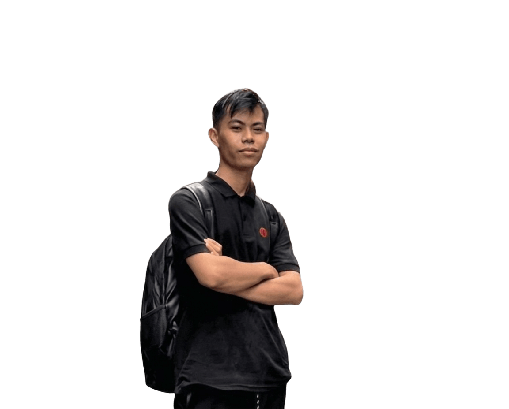
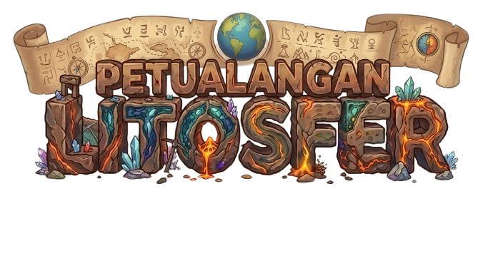
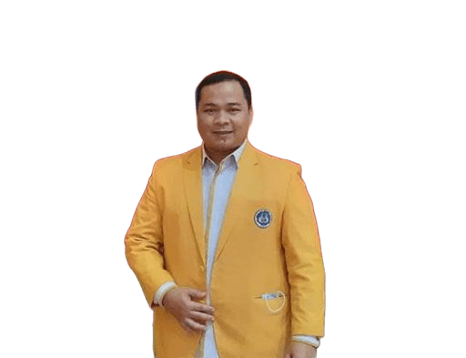

Mata Pelajaran Geografi • Ekspedisi Geografi LitosferPetualangan Litosfer Bumi
Game edukasi interaktif penjelajahan lapisan bumi, struktur batuan, siklus geologi, lempeng tektonik, hingga dinamika tektonisme berbasis materi Ruangguru.

Fase E • Kelas X SMA
Identitas Penjelajah & Avatar Karakter
Masukkan data diri Anda untuk memulai ekspedisi litosfer.
Klik avatar yang ingin digunakan saat bermain.
Tujuan Pembelajaran & Gambaran Materi
Peta Kompetensi Dasar Bab Litosfer Berdasarkan Referensi Ruangguru
Tujuan Pembelajaran
- Menganalisis dinamika litosfer dan dampaknya terhadap kehidupan di bumi.
- Menjelaskan struktur lapisan bumi (Kerak, Mantel, Inti).
- Mengklasifikasikan jenis batuan penyusun kulit bumi & siklus batuan.
- Memahami pergerakan lempeng tektonik dan gejala tektonisme.
Gambaran Materi & Game
Litosfer adalah lapisan terluar bumi yang tersusun atas kerak bumi dan bagian atas mantel bumi. Kata litosfer berasal dari lithos (batu) dan sphaira (bulatan), sehingga litosfer berarti lapisan batuan pembentuk permukaan bumi. Lapisan ini menjadi tempat makhluk hidup tinggal, tempat terbentuknya gunung, pegunungan, lembah, dan lautan, serta menjadi dasar bagi aktivitas manusia. Karena litosfer terdiri atas lempeng-lempeng tektonik yang bergerak, lapisan ini juga memengaruhi terbentuknya gempa bumi, vulkanisme, dan perubahan bentang alam di berbagai wilayah.
Uraian Materi Interaktif Litosfer
Pilih topik materi di bawah untuk memahami konsep dasar sebelum bermain game.
Jalur Petualangan
Peta Penjelajahan Litosfer
Selesaikan level aktif untuk membuka jalur berikutnya.
Level 1: Struktur Bumi
Level 1: Struktur Bumi
Memuat pertanyaan...
Tarik pasangan yang tepat ke area klasifikasi, lalu lepaskan untuk menjawab.
SERTIFIKAT PENJELAJAH GEOGRAFI
Diberikan secara resmi kepada penjelajah berprestasi dalam materi Litosfer Fase E
Nama Peserta didik:
---
Klasifikasi Keahlian
---
Berdasarkan jawaban benar terbanyak
Materi: Litosfer (Ruangguru Reference)
Evaluasi 5 Level Selesai
Kelas: --- • Sekolah: ---